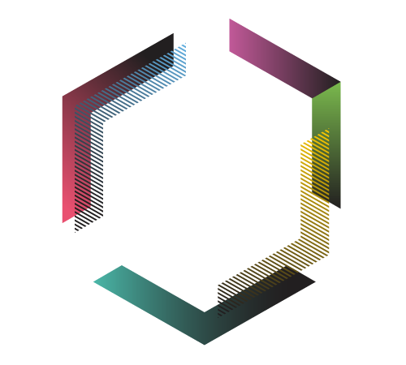

October 2019
9am - 5pm
12th October, Federation House, Manchester
An unconference is the opposite of a conference. Where a conference has a schedule of talks planned in advance, an unconference starts with no agenda until the attendees, not the organisers, determine one.
Everyone is encouraged to bring a talk to the event, with the day having 30 minute slots including time for questions, and time for people to change rooms ready for the next talk to begin.
The focus of the unconference is the Drupal Content Management Framework, and supporting subjects including databases, frameworks, security, UX, front-end development and design are also encouraged.
There are a number of options for arriving by public transport.
The nearest tram stop is Shudehill, on the Bury–Altrincham and Rochdale–East Didsbury lines. For other lines, Piccadilly Gardens is the closest and the venue is just 10 minutes walk away from there.
The nearest local bus station is Shudehill/Thomas Street, for visitors coming from North Manchester. For other local buses, Manchester Piccadilly Bus Station is located just 5 minutes walk away. The nearest national bus station is the Shudehill Bus Interchange, although Chorlton Street Bus Station is only 20 minutes walk away.
Federation House is closest to Manchester Victoria, but still only a short walk from Manchester Piccadilly.
From Manchester International Airport, there is a train station at Terminal 2 with regular trains to Manchester Piccadilly Train station which take approximately 35 minutes. Alternatively, taxis are available outside all terminals and will take roughly 30 minutes on a good day, costing around £25.
If you are driving to Federation House, there is limited on-street parking in the area. Alternatively, there are two NPC car parks at Manchester Arndale and Manchester Printworks roughly two minutes walk away. Also, be warned that the Northern Quarter has a somewhat inscrutable one-way system so bring your sat nav.
This one is harder – we recommend coming in via the Mersey Estuary past Liverpool, heading up the Manchester Ship Canal then making your way to Ancoats Marina and walking.
The Unconference will start at 9am and finish at 5pm. Social venue TBC.
Federation House is centrally located in Manchester’s Northern Quarter.
Manchester
M4 4BF
Hopefully they'll be answered somewhere on this page but if not, get in touch and we'll do our best to help.
Whatever you want! As long as it relates to Drupal in some way we're open to any topic. How to guides, a community issue, a case study. Come and share something you're passionate about.
Sessions will be about 30 minutes.
Not at all, we're open to any type of session. Whether you want to stand and talk, bring props, use the provided whiteboards, have a discussion or anything else we want you to take part. If you do want to use slides, a projector will be available with common adapters. We recommend making sure your slides are available online so that, should the worst happen, you can still access them on the day.
If you have any doubts at all, get in touch and we'll try to sort something out.
No. You're more than welcome to come and meet people, take in the talks and have a great day. However, the unconference will be a great place to do your first talk or to try out a new idea. We will be a friendly and encouraging audience.
Interesting in supporting our event and promoting your company here? Get in touch and we'll send you our sponsor pack.